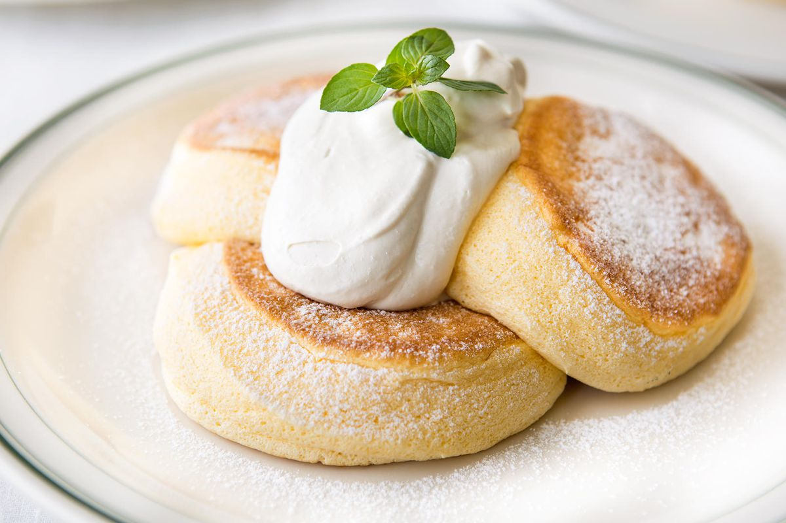

Souffle Pancakes

Description
A scrumptious breakfast dish with giant fluffy pancakes
Ingredients
- 2 large egg yolks
- 4 tbsp/50g cake flour or all purpose flour
- 1/2 tsp/ 2.5ml baking powder
- 1 tsp/4.9ml vanilla extract
- 2 tbsp/ 30ml milk
- 1 tbsp/ 15 ml melted butter (or oil)
Meringue
- 2 egg whites
- 1 1/2tbsp/ 18.75g sugar
Steps
- In a bowl, sift flour, sugar, baking powder, and salt. Add egg yolk, butter, milk, vanilla, and water. Stir to combine all ingredients thoroughly. Set aside.
- Keep the separated egg white refrigerated until you're ready to whisk it. Whip the egg whites and sugar until stiff peaks form. Carefully fold egg whites into the batter. The batter should be stiff yet fluffy and not runny at all.
- Heat butter in a frying pan. Pour about 1/4 cup (59ml) of the batter into the pan (it should stand on its own and not be runny) cover and cook for 2-3 minutes. Remove the lid, add another 1/4 cup of the batter on top of the pancake already cooking. Cover and continue to cook for another 4-5 minutes.
- CAREFULLY flip the pancakes and cook the other side for another 4-5 minutes covered. Repeat with remaining batter until it's all gone.
- Plate the pancakes and serve with whipped cream, fruits, syrup (if desired) and enjoy!
Home Page